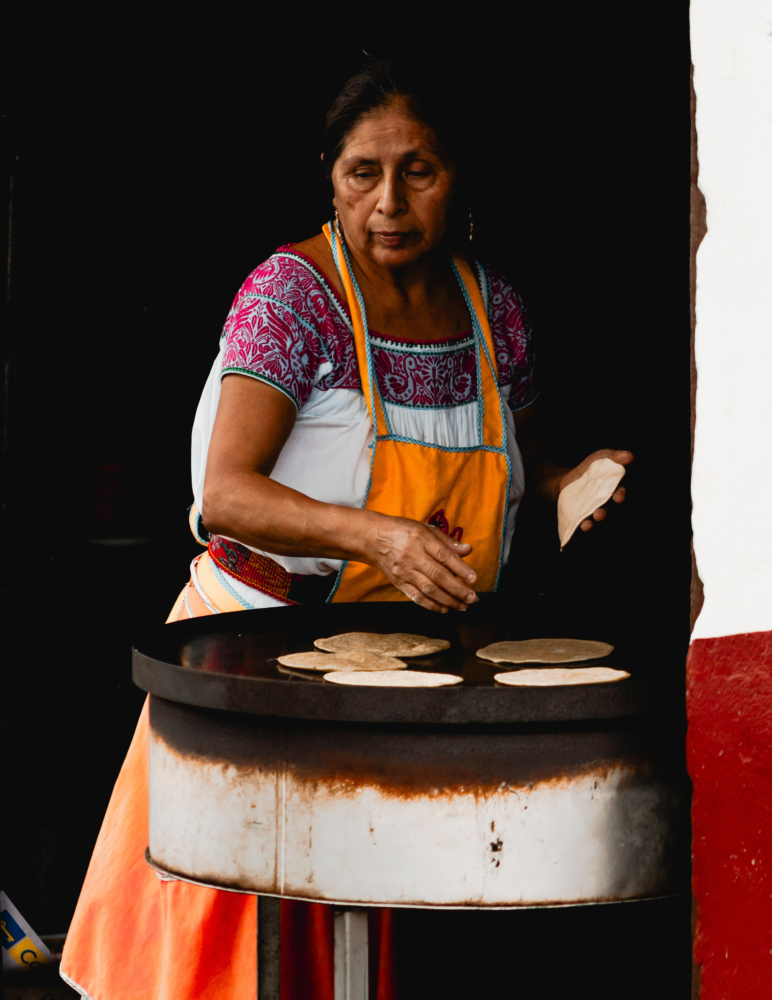

The maize tortilla is one of the foundations of Mexican cuisine and one of the clearest examples of continuity between ancient Mesoamerican food systems and contemporary Mexican life.
For Indigenous civilizations of Mesoamerica, maize was not merely an agricultural product. It occupied a central economic, nutritional, social, and symbolic position. Tortillas were already being consumed long before European contact, and sources from the Mexican government describe their consumption as extending back more than 2,500 years. Nahuatl-speaking peoples referred to the tortilla as tlaxcalli, while the Spanish eventually used the word tortilla to describe the thin maize preparation.
The tortilla is especially important because it depends on one of the most sophisticated culinary technologies developed in ancient Mesoamerica: nixtamalization
UNESCO identifies nixtamalization as one of the defining techniques of traditional Mexican cuisine.
Traditional corn tortillas require only a few basic ingredients:
The apparent simplicity of the ingredient list hides a highly significant chemical transformation.
To prepare traditional tortilla dough, dried maize is cooked or soaked in an alkaline solution of water and lime. This process is called nixtamalization.
During nixtamalization, the alkaline solution changes the physical and chemical properties of the grain. It helps soften the outer layers of the kernel, makes the maize easier to grind into cohesive dough, increases the availability of certain nutrients, and introduces calcium into the final product. This ancient technology is one of the principal reasons maize could become the foundation of highly developed Mesoamerican food systems.
After heating, the maize is allowed to rest for several hours. It is then drained and traditionally washed before being ground. The resulting material is known as nixtamal, and once ground it becomes fresh maize dough, or masa.
The general traditional process is:
Remove pieces of cob, dust, and other impurities.
The kernels are heated in water containing food-grade calcium hydroxide.
The grain remains in the alkaline liquid for several hours so that the nixtamalization process can continue.
Traditionally, this could be done using a stone metate; mechanical mills are now common. Grinding produces the soft dough called masa
Portions of masa are flattened into thin circular disks by hand or with a tortilla press.
The tortilla is placed on a hot, flat cooking surface called a comal and cooked on both sides. Properly prepared tortillas often inflate briefly as steam forms between their internal layers.
The tortilla functions simultaneously as food, utensil, and culinary structure. It can accompany a meal, hold ingredients as a taco, be fried or toasted, or become the foundation of foods such as enchiladas, chilaquiles, quesadillas, and tostadas.
Its cultural significance is equally important. UNESCO emphasizes that maize-based foods such as tortillas are part not only of everyday consumption but also of ceremonial practices and community identity.
The tortilla therefore represents a remarkable continuity: a food-processing technology developed in ancient Mesoamerica remains part of the daily diet of millions of people today.